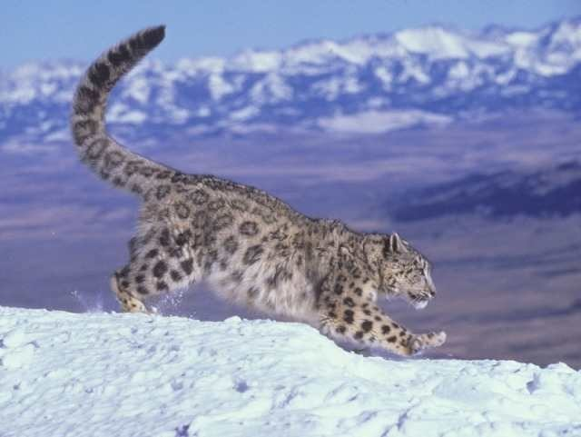
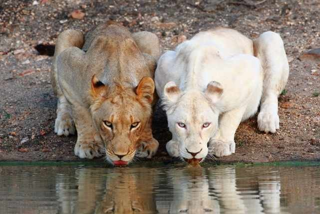
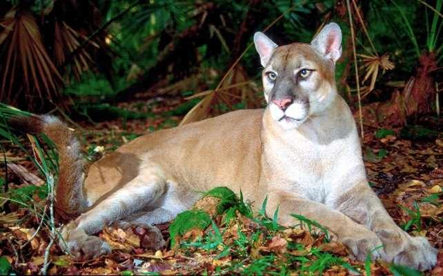

Первое коронное место этого списка занял Снежный барс или, как его ещё называют, Ирбис
Это крупное хищное млекопитающее живет в горных массивах Центральной Азии. Ирбис, из семейства кошачьих, имеет тонкое, длинное, гибкое тело и довольно короткие лапы.
Он также отличается небольшой головой и длинным хвостом. На сегодняшний день численность ирбисов очень мала. Его внесли в Красную книгу МСОП (Международный союз охраны природы),
в Красную книгу России, и другие охранные документы различных стран.

Серебро в этом списке заполучил Белый лев.
Стоит отметить, что белый лев является специфическим полиморфизмом с генетическим заболеванием - лейкизмом, которое и приводит к более светлой окраске шерсти.
Несмотря на то, что данное проявление, по сути, является противоположностью меланизму, белые львы все же не являются альбиносами - у них естественная пигментация глаз и кожи.
То что белые львы существуют, было доказано лишь в конце XX века. В 1975 году впервые были обнаружены детеныши белого льва, которые находились в заповеднике Тимбавати в ЮАР.

Ну и почётное третье место досталось Флоридской пуме.
Будучи записанным в Международную Красную книгу как "Вид на грани исчезновения", это животное является самым редким подвидом пумы.
В 2011 году на Земле их численностьсоставила всего около 160 особей (при том, что в 1970-е годы, эта цифра опустилась до 20). Привычная среда обитания данной пумы это леса и болота Южной Флориды
(США), в основном ими занять район заповедника Big Cypress National Preserve. Численность этих животных начала падать в основном из-за осушения болот, спортивной охоты и отравления.

Назад